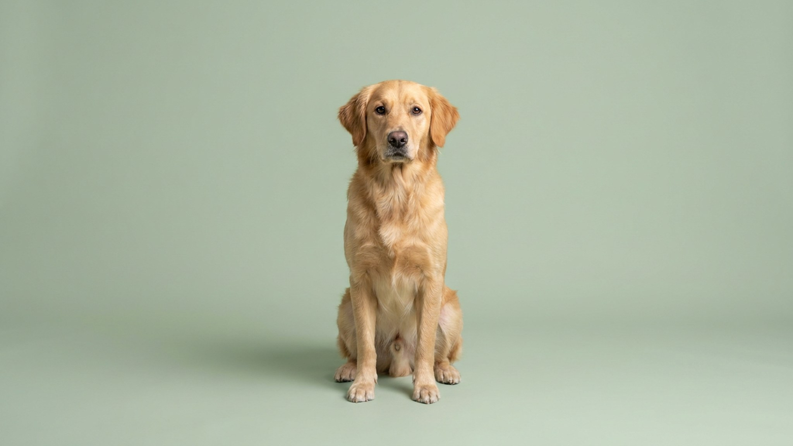

Включаете пылесос — кошка под кроватью, собака в другой комнате с поджатым хвостом. Это не каприз: для животного пылесос звучит в два-три раза громче, движется непредсказуемо и не пахнет ничем знакомым — три признака хищника по меркам инстинкта. Ниже — почему страх перед пылесосом устроен именно так и как шаг за шагом сделать уборку обычным событием.
🐾 Не уверены, что это опасно?
Опишите симптом в AnimaLife — AI-ветеринар за минуту подскажет, что в пределах нормы, а когда пора к врачу.
Кошки слышат в диапазоне до 65 000 Гц, собаки — до 65 000–67 000 Гц, человек — до 20 000 Гц. Пылесос создаёт широкий спектр шума, значительная часть которого для нас почти неслышима, а для питомца — оглушительна. Добавьте к этому два других фактора:
Метод работает одинаково для кошек и собак: мы меняем эмоциональную реакцию на пылесос с «опасность» на «нейтрально». Ключевое условие — никакого принуждения, каждый шаг только при спокойном состоянии питомца.
Каждый шаг может занять от одного дня до нескольких недель — это норма. Торопить нельзя.
Два распространённых подхода не только бесполезны, но и усугубляют ситуацию:
Если после нескольких недель работы реакция не меняется или нарастает, страх перед пылесосом может быть частью более широкой картины — общей тревожности или повышенной чувствительности к звукам. Поведенческий ветеринар или зоопсихолог поможет разобраться, есть ли системная причина и какой подход нужен в конкретном случае. Сигналы, при которых стоит обратиться: питомец не успокаивается в течение часа после уборки, реагирует так же на другие бытовые звуки, избегает еды в дни уборки.
🐾 Питомец ведёт себя странно?
AnimaLife расшифрует поведение кошки и собаки и подскажет, что делать. Попробуйте бесплатно прямо в мессенджере.
🐾 Понравился разбор?
Подпишитесь на канал — каждый день разбираем по одному тревожному симптому у кошек и собак: что в пределах нормы, а когда пора к врачу. Подпишитесь, чтобы не пропустить разбор, который может спасти здоровье вашего питомца.
Материал носит информационный характер и не заменяет очную консультацию ветеринара.